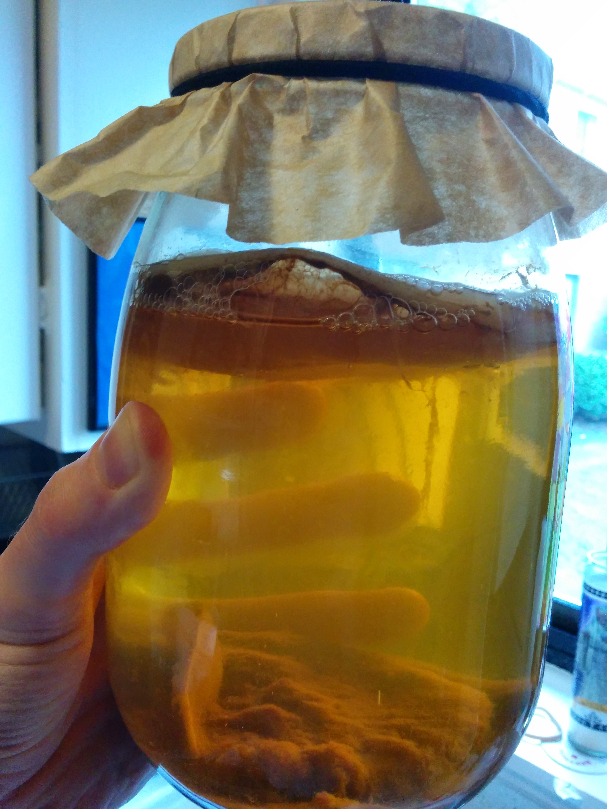
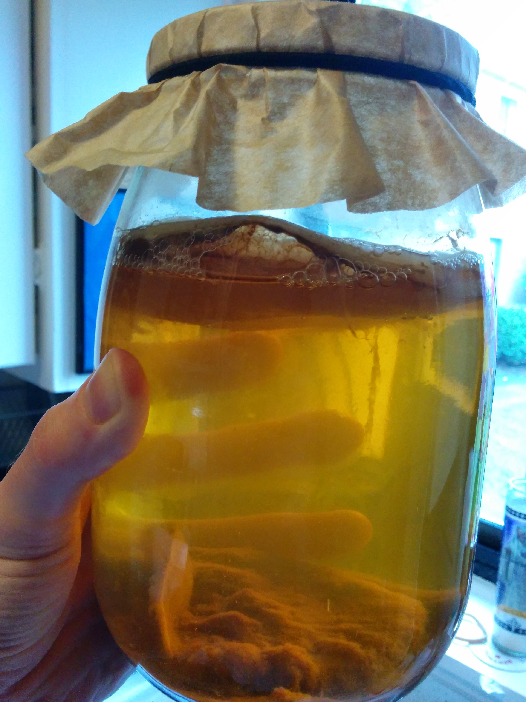
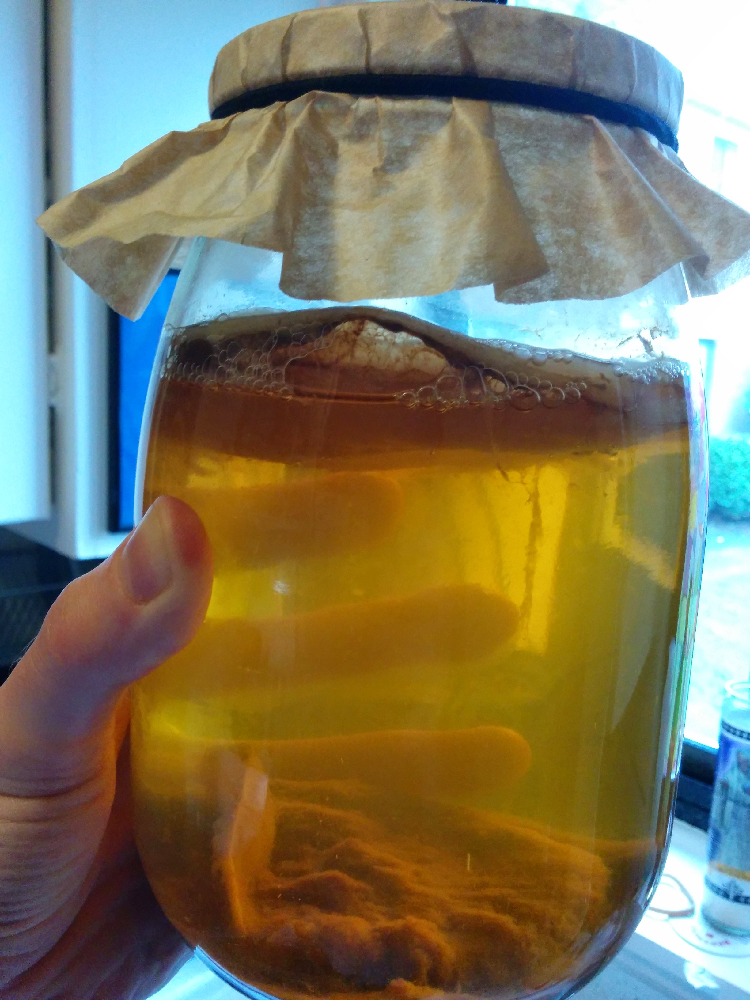

You can examine some projects I've worked on at Epicodus
I served as an cryptographic IT guy in the US Air Force for awhile, and meeting those challenges taught me to enjoy troubleshooting technical problems. This experience, plus years spent tinkering with computers and software, eventually lead me to the vocational programming school, Epicodus.
After moving to Oregon (and before deciding to learn to program) I studied neuroscience and earned a BS in Psychology at Portland State University. Currently I'm fascinated by the web technologies I learn and use daily, and the expanding arena of the cloud services. I live in Southeast Portland with my wife (a pop culture savant and medical Data Analyst), our aquarium of fish and snails, and our kombucha: sometimes less exotic yeasts live with us for awhile, if I'm homebrewing beer.
